開催日:5月中旬
開催場所：第2体育館
担当:副会長
準備期間:1~2ヶ月
step01.要項の作成
過去の要項を参考にして、議案書の作成と要項の作成を行う。
基本的に大まかな変更はないが、新企画であったりを追加する場合は記述すること。
step02.議案書の作成
実際に生徒に配布(class room掲示)する議案書を作成する。昨年のものを参考に名簿や樋津を変更。
変更箇所や注意点は目立つようにする。
生徒総会の前に議長団と、議案音読み合わせを行うといいでしょう。
各議案書の変更点や疑問点をつぶしておくことで当日にスムーズに進行できます。
step03.各HRで議案審議
議案書を配布後に各HRで議案審議を行う。
代議委員会で議案審議の方法を伝える。
この委員会で議長1名/副議長2名/書記2名を選出する。（当日の進行等）
step01.議案書をそれぞれ熟読し、質問事項を挙げる。
質問事項がなければ審議に移る。
step02.各議案書ごとに賛成/反対の票数を数え記録する。
step03.全議案書の承認が終わりし次第、終了。
step04.体育館で全体審議
step01.風紀委員長の指示で全校生徒を第2体育館に整列させる。
step02.議案書の審議を行う。シナリオに従い議長団と執行部を中心に進行する。（必要であれば放送局）
step03.質問事項等は事前に集計し、質問と回答を合わせて連絡する。
その場での質問は原則受け付けない。
step04.議案書一つごとに全校に審議を取り、賛成数が出席者数の過半数を占めた場合「可決」とする。
否決の場合ーー
step05.全議案書の承認が終わりし次第、終了。
過去の会場図を参考にしてください
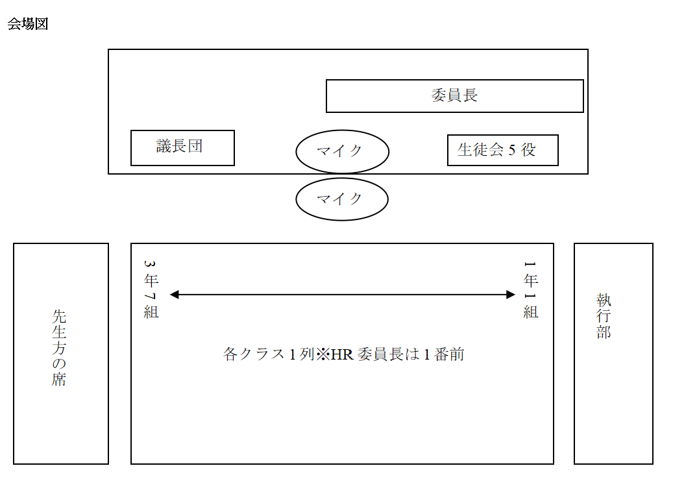以下に可否採決の取り方（生徒会会則）があるので目を通してください。
以下に47期の生徒総会議案書があるので参考までに目を通してください。
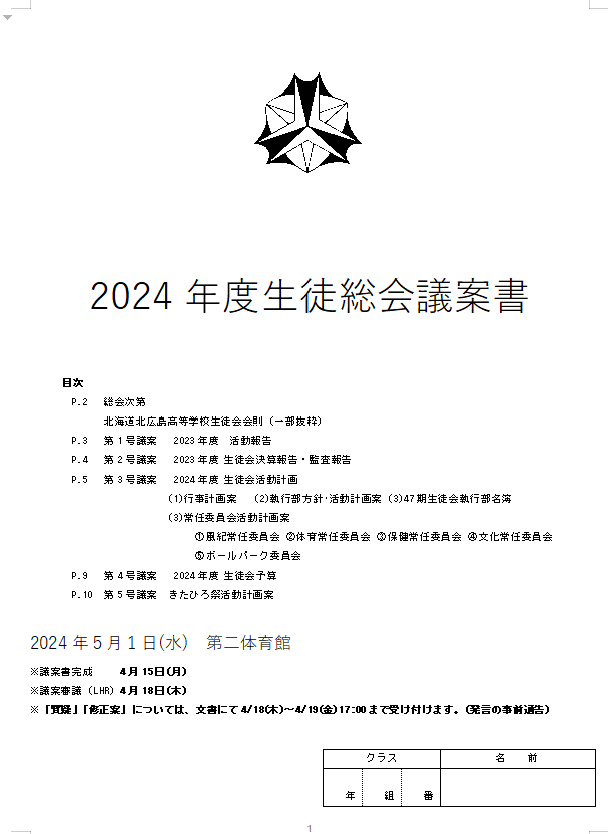 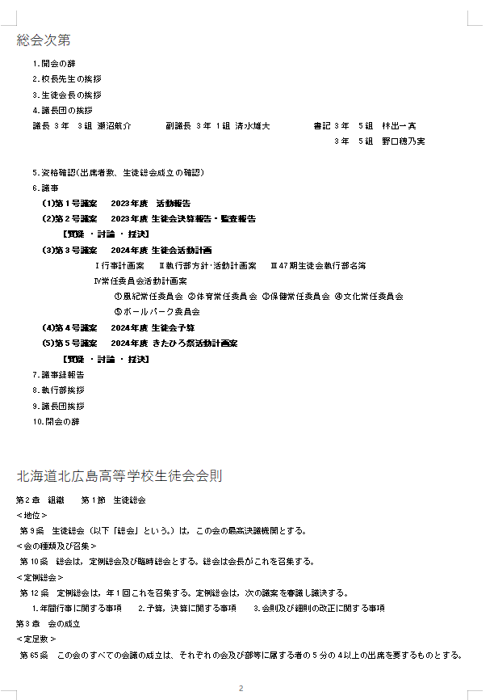 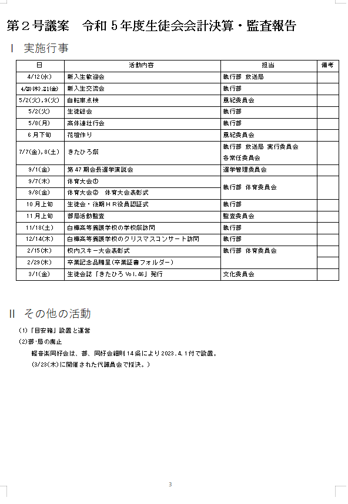 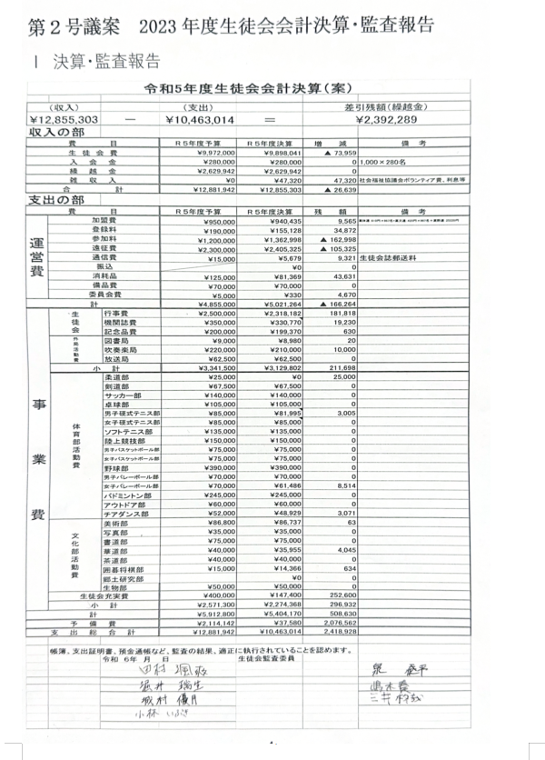 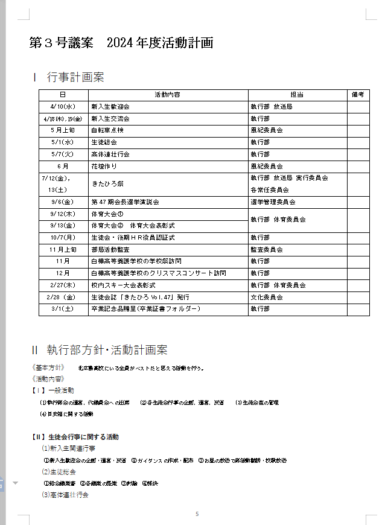 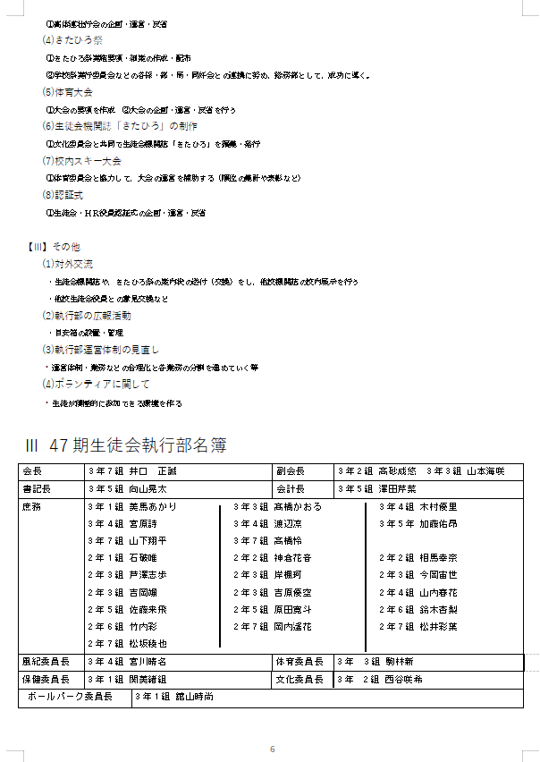 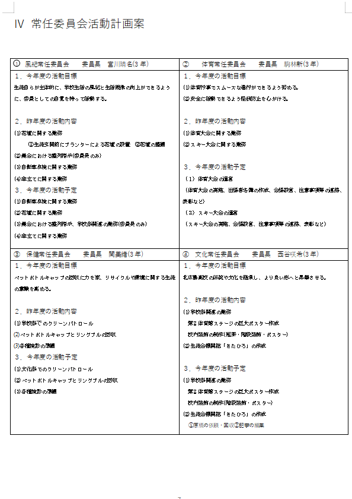 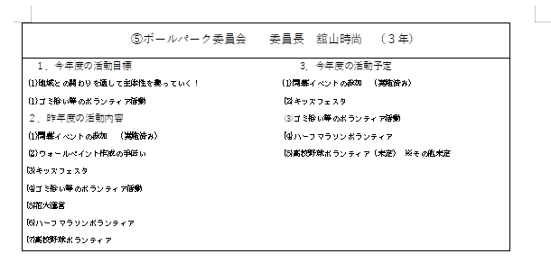 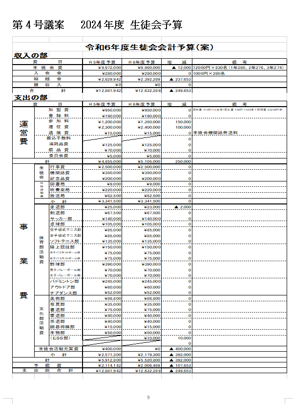 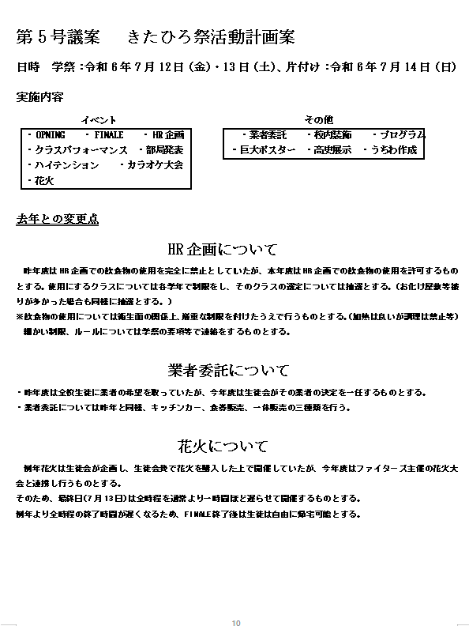